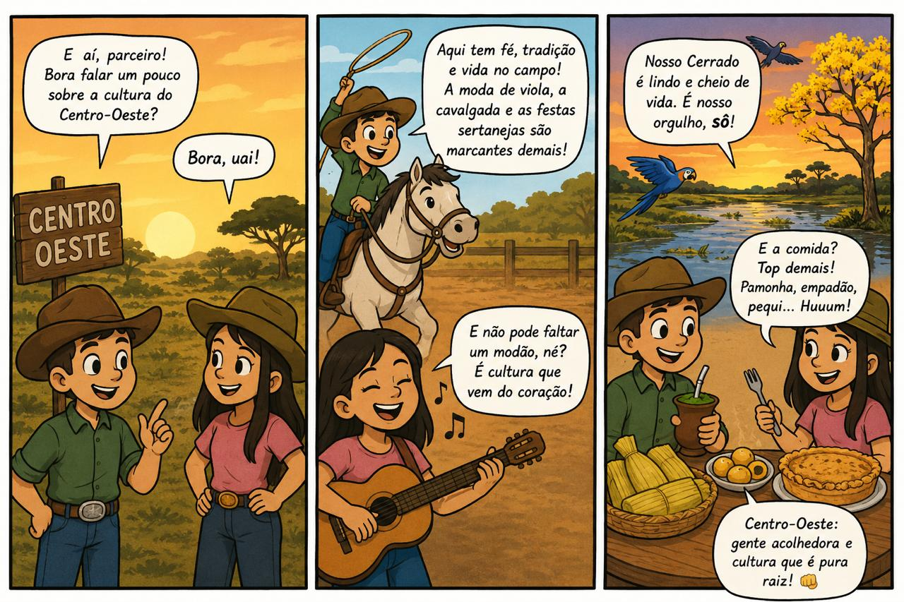
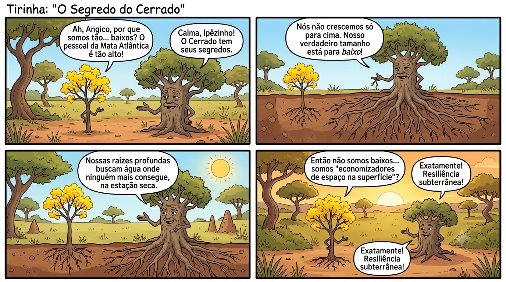
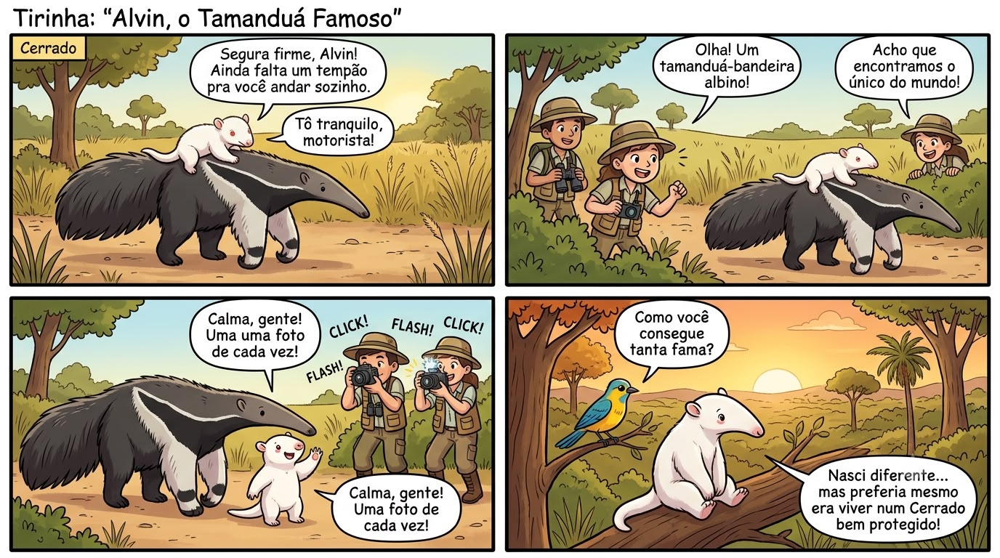

A cultura centro-oestina é um mosaico vivo formado por povos indígenas, africanos, portugueses, espanhóis e migrantes de todo o Brasil. Conheça as gírias, as influências linguísticas e as festas que moldam a identidade única dessa região.
Uma gíria regional é uma palavra ou expressão característica de determinada região, que reflete aspectos da cultura, dos costumes e da identidade local. No Centro-Oeste, o vocabulário regional é fortemente influenciado pelas heranças dos povos originários, pelo contato com o dialeto sulista e, especialmente no Mato Grosso do Sul, pela proximidade com o Paraguai.
Gíria coringa, serve para qualquer coisa que você queira mencionar. Extremamente versátil no vocabulário centro-oestino.
Expressa espanto, surpresa ou funciona como um vício de linguagem. Muito usada em Minas Gerais e no Centro-Oeste.
Expressa algo em grande quantidade, intensidade ou muito bom. Uma das expressões mais usadas no vocabulário centro-oestino.
Gíria muito comum nos centros urbanos, utilizada para descrever objetos ou eventos grandiosos.
Significa atrapalhar ou estorvar. Maneira descontraída de pedir para que alguém não atrapalhe.
Expressão carinhosa para descrever uma pessoa trabalhadora e esforçada, que não tem preguiça.
Forma carinhosa de se referir à bicicleta, um meio de transporte muito utilizado no dia a dia da região.
Gíria comum em festas e rodas de amigos, para se referir a alguém que bebeu muito.
Ficar no sol, se bronzear ou simplesmente ficar à toa no calor do Centro-Oeste.
Termo carinhoso utilizado para descrever crianças travessas e sapecas.
Remete à alegria de ganhar ou receber algo, especialmente dinheiro ou desconto.
Expressão usada para dizer que algo é muito bom ou incrível, reforçando satisfação ou admiração.
Dizer que algo deu errado ou se complicou, como uma piora na saúde ou uma situação fora do controle.
Pode descrever alguém medroso, sem coragem, ou uma pessoa canalha e desonesta, dependendo do contexto.
Expressão usada para se referir ao ato de vomitar. Muito comum quando alguém está passando mal.
A clássica interjeição goiana de espanto, surpresa ou indignação. Equivale a um “Mentira!”.




Presente na nomeação de lugares e termos do cotidiano, além de influenciar a fonética de palavras. Em estados como Mato Grosso, palavras com "t" e "d" soam como "tchu" e "dji", herança direta dos povos originários da região.
Caracterizada pela vogal "r" retroflexa e bem-marcada, onde a língua enrola ao pronunciar palavras como "porta" ou "porteira". Essa influência é marcante especialmente em Goiás e no interior do Mato Grosso.
O Mato Grosso do Sul faz fronteira com o Paraguai e a Bolívia, favorecendo a incorporação de termos do guarani e do espanhol ao vocabulário regional. Um exemplo é "pororô", do guarani, amplamente usado para se referir à pipoca.
A intensa migração de gaúchos para o Mato Grosso do Sul trouxe o "r" vibrante ou gutural e o "s" mais chiado. O pronome "tu" se mistura ao "você" do restante do Centro-Oeste, criando uma grande diversidade linguística na região.
A região Centro-Oeste possui uma rica diversidade de manifestações culturais, expressas por meio de festas, danças, músicas e costumes que representam a identidade de sua população. Sua cultura tem origem em diferentes povos indígenas, além de influências africanas, portuguesas, espanholas e de estados vizinhos.
 Mato Grosso · Goiás
Mato Grosso · Goiás
Manifestação cultural que celebra os santos católicos negros, como São Benedito, Nossa Senhora do Rosário e Santa Efigênia. Acontece nos estados do Mato Grosso e Goiás e é formada por danças, músicas e celebrações com elementos religiosos e de origem africana. A Congada é um dos mais belos exemplos de como a cultura afro-brasileira se mantém viva e pulsante no coração do Brasil.
/i.s3.glbimg.com/v1/AUTH_59edd422c0c84a879bd37670ae4f538a/internal_photos/bs/2023/L/b/Xb9B0ATnunE5Pe5RBVew/siriri-.jpeg) Mato Grosso · Cuiabá
Mato Grosso · Cuiabá
Acontece desde 2002 em Cuiabá, capital do Mato Grosso. Durante o festival, são realizadas danças que, ao som de instrumentos como a viola de cocho, o mocho e o ganzá, apresentam heranças indígenas, paulistas e ibéricas.
 Mato Grosso
Mato Grosso
Celebra os vaqueiros e os bois que desbravaram as terras do interior do país. Acontece principalmente no Mato Grosso, em cidades como Santo Antônio do Leverger, e conta com danças, encenações e a presença marcante dos bois em toda a festividade.
 Mato Grosso do Sul · Campo Grande
Mato Grosso do Sul · Campo Grande
Considerada uma das mais antigas festas religiosas do país, muito comum em Campo Grande, capital do Mato Grosso do Sul. A celebração conta com diversas atividades religiosas e de lazer, como quermesse, shows e apresentações de dança, reunindo fiéis e visitantes de toda a região em torno da fé e da tradição.